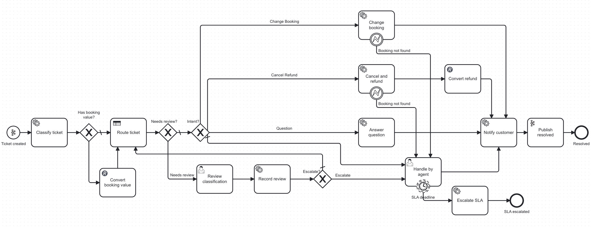
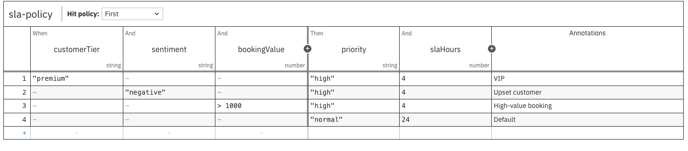
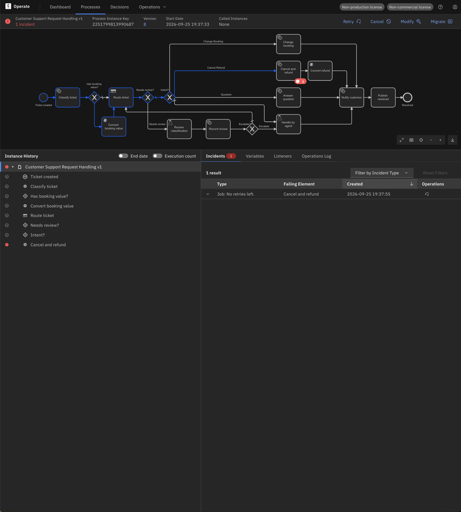
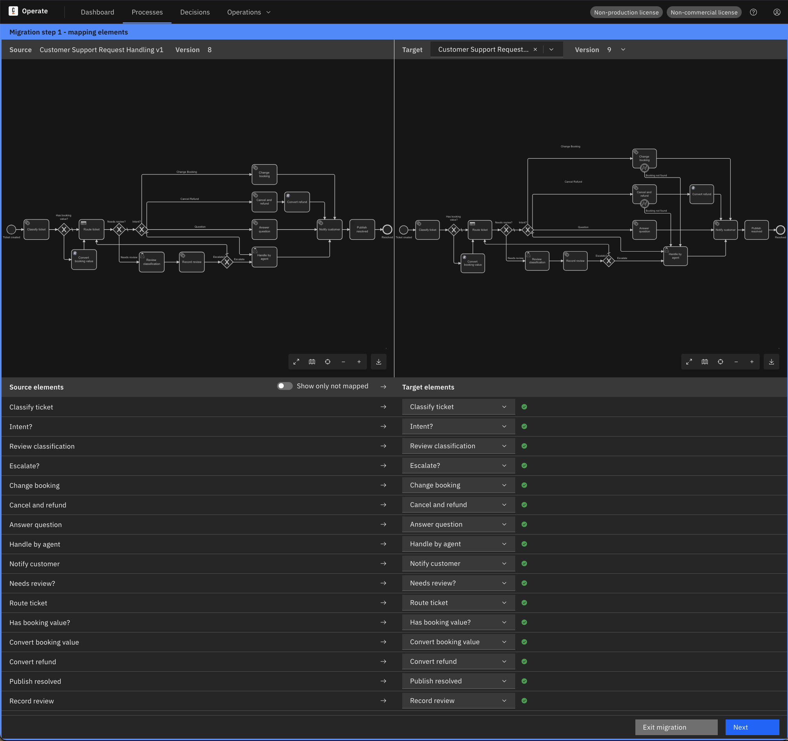
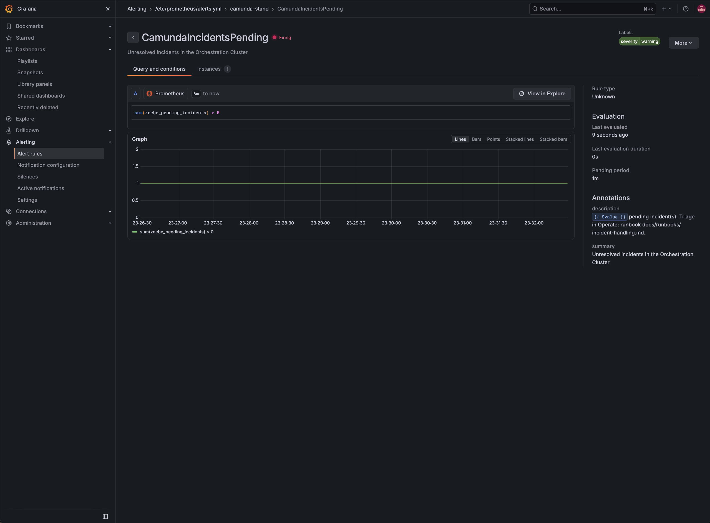
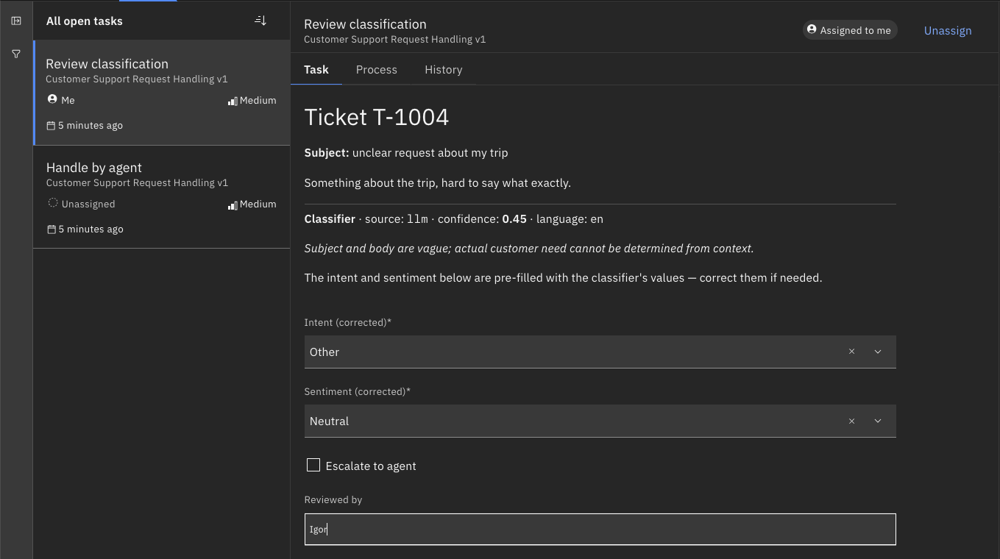

A ticket arrives over Kafka, an LLM with guardrails classifies it, DMN routes it, workers resolve it, and every failure mode is rehearsed and written down.
A travel booking company receives support tickets in English and Russian: booking changes, cancellations with refunds, and general questions. Each ticket has to be classified, routed to the right team with a priority and an SLA deadline that depends on customer tier and booking value, and refunds need a booking lookup and a currency conversion before the customer is notified. In plain code these rules end up scattered across services, a stuck refund is a line in a log, and changing an SLA means a redeploy. A BPM engine makes every ticket a visible process instance, keeps routing and SLA policy in DMN tables that change without code, turns failures into incidents an operator can retry or migrate, and lets the SLA timer live in the model itself.
| Requirement | Evidence |
|---|---|
| BPMN processes and DMN decision tables in Camunda 8 | processes/, decisions/, DMN test matrix (18 cases) |
| Greenfield process plus ongoing improvements | process changelog v1→v10 in the process design, migration runbook |
| LLM classifier with configurable prompts | workers/llm-classifier/, prompts/, accuracy report |
| AI/LLM guardrails | LLM guardrails overview, classifier design |
| Support and debug in Operate, quick fixes in production | incident-handling runbook, timeout runbook |
| REST / JSON / Kafka integrations | Kafka and REST connectors, workers/booking/, services/fx-gateway/, integrations design |
| Operations on production-like systems | install, backup and restore, upgrade, password rotation, monitoring profile |
flowchart LR
subgraph external["External"]
claude["Claude API"]
ecb["frankfurter.app (ECB rates)"]
end
subgraph vm["Single VM — Docker Compose"]
subgraph core["core profile"]
camunda["Orchestration Cluster
(camunda/camunda 8.9)
Zeebe + Operate + Tasklist + Admin"]
connectors["Connectors 8.9"]
es[("Elasticsearch
secondary storage")]
end
subgraph integrations["integrations profile"]
kafka["Kafka (KRaft, single node)"]
bookingapi["booking-api (Go, mock)"]
fxgw["fx-gateway (Go)"]
pg[("PostgreSQL
LLM audit + analytics")]
end
subgraph workers["workers profile"]
wbooking["worker-booking (Go)"]
wclassifier["worker-llm-classifier
(Python SDK)"]
end
subgraph monitoring["monitoring profile"]
prom["Prometheus"]
graf["Grafana"]
end
end
kafka -- "support.ticket.created (inbound connector)" --> connectors
connectors -- "support.ticket.resolved (outbound connector)" --> kafka
connectors -- "REST /convert" --> fxgw
fxgw --> ecb
wbooking -- "REST v2: long-poll jobs" --> camunda
wbooking -- "HTTP/JSON" --> bookingapi
wclassifier -- "REST v2: long-poll jobs" --> camunda
wclassifier -- "classify / answer / notify" --> claude
wclassifier -- "audit" --> pg
camunda --> es
connectors --> camunda
prom --> camunda
graf --> prom


sla-policy table: priority and SLA hours by tier, sentiment and booking value — routing design


CamundaIncidentsPending firing on a live incident — monitoring design
Incident handling — bad data, downstream outage, configuration errors resolved in place; plus the timeout and SLA escalation variants.
Instance migration — the model was wrong: fix it in a new version, move the live instance, resolve the incident.
Backup and restore — Zeebe, Elasticsearch and PostgreSQL, rehearsed in three round-trips.
Upgrade — patch path 8.9.19 → 8.9.21 rehearsed on a disposable lab with waiting instances.
Password rotation — the scoped worker user rotated on the running cluster without losing jobs.
Monitoring — Prometheus and Grafana profile with the pending-incidents alert.
A profile that is only in .env.example is not deployed. The monitoring profile sat unused for four phases — lessons learned
The incident gauge is zeebe_pending_incidents, not _total. A live scrape corrected the design before the alert went in — operations design §2
A search answering 200 proves credentials, not permissions. Least privilege is proven by job activation, not by a search — install, Workers
The search API lags the engine. Only the write's answer is authoritative — lessons learned
Identity indices are in no snapshot of the backup set. Verify the worker user after any restore — backup and restore §6
This is v2 of the Camunda LLM Ticket Refund demo, which ran a single refund process on Camunda 7.21 with an OpenAI worker through the External Task pattern. v2 moves to Camunda 8.9 Self-Managed and widens the scope from one refund flow to the whole support desk: Kafka as the entry point, routing and SLA policy in DMN, a Claude-based classifier with schema validation, fallback and human review, REST integrations through connectors and Go workers, and a rehearsed operations layer — incidents, instance migration, backup and restore, upgrade, monitoring and least privilege.